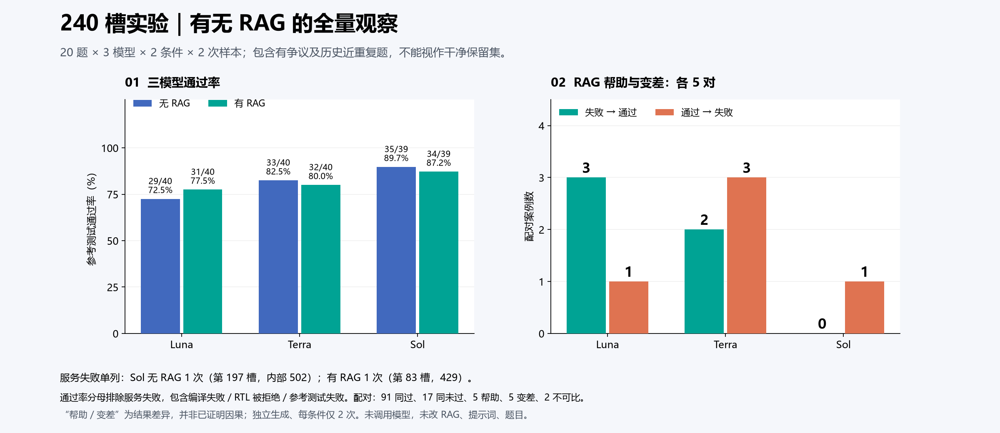
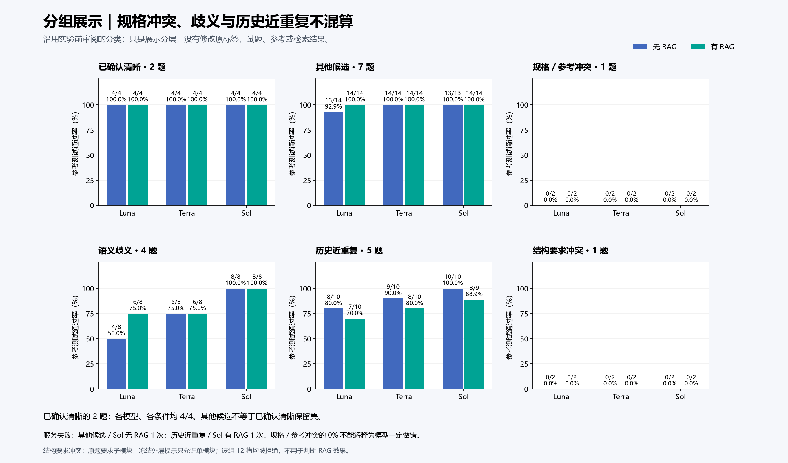
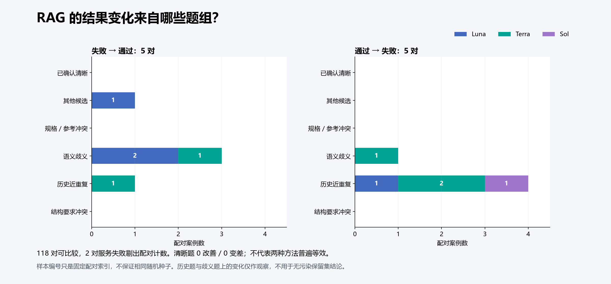

194 次参考测试通过，44 次非服务未通过，2 次服务失败；服务失败保留原记录，不补跑。下图为只读分析，不证明 RAG 因果收益。没有调用模型，也没有修改 RAG、提示词或题目。



| 题目 | 模型 | 样本 | 无 RAG | 有 RAG | 题组 |
|---|---|---|---|---|---|
| Prob033_ece241_2014_q1c | gpt-5.6-sol | s001 | REFERENCE_PASS | SERVICE_ERROR | 历史近重复 |
| Prob074_ece241_2014_q4 | gpt-5.6-sol | s001 | SERVICE_PROTOCOL_ERROR | REFERENCE_PASS | 其他候选 |
| Prob089_ece241_2014_q5a | gpt-5.6-luna | s001 | COMPILE_ERROR | REFERENCE_PASS | 语义歧义 |
| Prob089_ece241_2014_q5a | gpt-5.6-luna | s002 | COMPILE_ERROR | REFERENCE_PASS | 语义歧义 |
| Prob089_ece241_2014_q5a | gpt-5.6-terra | s001 | REFERENCE_PASS | COMPILE_ERROR | 语义歧义 |
| Prob109_fsm1 | gpt-5.6-luna | s001 | REFERENCE_PASS | COMPILE_ERROR | 历史近重复 |
| Prob109_fsm1 | gpt-5.6-sol | s002 | REFERENCE_PASS | COMPILE_ERROR | 历史近重复 |
| Prob109_fsm1 | gpt-5.6-terra | s001 | REFERENCE_FAIL | REFERENCE_PASS | 历史近重复 |
| Prob127_lemmings1 | gpt-5.6-luna | s002 | COMPILE_ERROR | REFERENCE_PASS | 其他候选 |
| Prob146_fsm_serialdata | gpt-5.6-terra | s001 | REFERENCE_FAIL | REFERENCE_PASS | 语义歧义 |
| Prob150_review2015_fsmonehot | gpt-5.6-terra | s001 | REFERENCE_PASS | REFERENCE_FAIL | 历史近重复 |
| Prob150_review2015_fsmonehot | gpt-5.6-terra | s002 | REFERENCE_PASS | REFERENCE_FAIL | 历史近重复 |
完整题目列表：20题逐模型对照。分组依据：实验前 ALL20_REVIEW.md；Prob109 同时披露时钟边沿未明确，主标签按历史近重复展示。